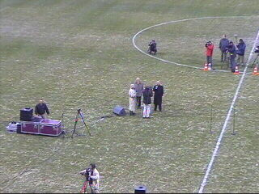
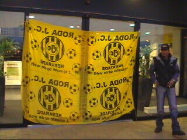

|
Supportersbijeenkomst op zuid |
Het preventieve werk bij de hoofdingang.
Ook ME bij de zuidzijde.
Een Maastrichtse Rodasupporter!
De Rodasupporters op zuid wachten de heren
Pickee en Hendriks op die nogal wat uit hebben
te leggen.
Han van der Meer is spreekstalmeester.

"Nooit FC Limburg".
Er waren 400 supporters op zuid!
Via drie microfoons konden er vragen gesteld
worden.

Veel belangstelling van de pers.
Er werden veel vragen gesteld die goed en kritisch
geformuleerd waren.
Het lijkt erop dat GELD het sleutelwoord is met
het oog op een veranderende toekomst in het
betaalde voetbal. Alleen de clubs met een gezonde
begroting gaan een veilige toekomst tegemoet.
De voorzitter reppelde zelfs over een mogelijk
samengaan van diverse landen bij het bekervoetbal.
Hendriks en Pickee zeiden er alles aan te doen om
de naam en de kleuren van Roda te behouden en
dat men pas over een fusie of andere vorm van
samenwerking denkt als er garanties zijn dat er
geld komt.
"Zou er een sponsor komen die 20 miljoen euro op
tafel legt, dan praten we niet eens meer met Fortuna
of MVV" aldus Theo Pickee.
Een geëmotioneerde vragenstelster: de moeder
van oud-Roda-speler Pierre Vermeulen.
De Maastrichtenaar...
If you love RJC than clap your hands!
Off-topics.

Bij de hoofdingang werd deze vlag opgehangen.
Er verzamelde zich een grote groep supporters.
Daarna begon de ME rond het stadion te rijden.
De supporters verspreidden zich. Een groep zou
later de N281 blokkeren.
©KPD